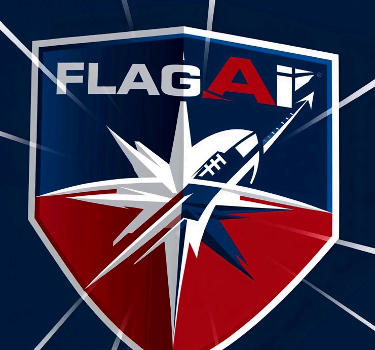
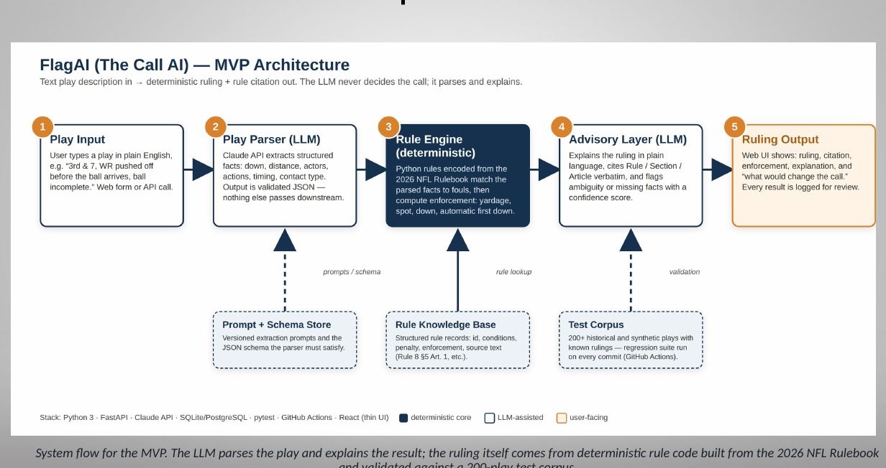
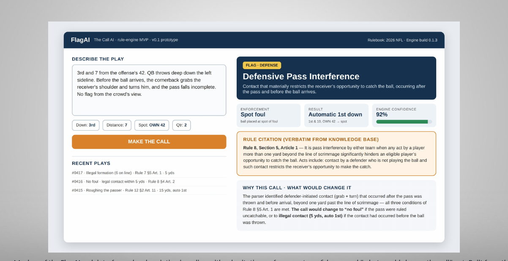
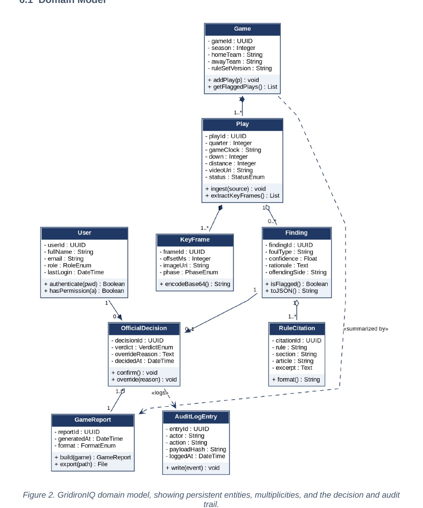
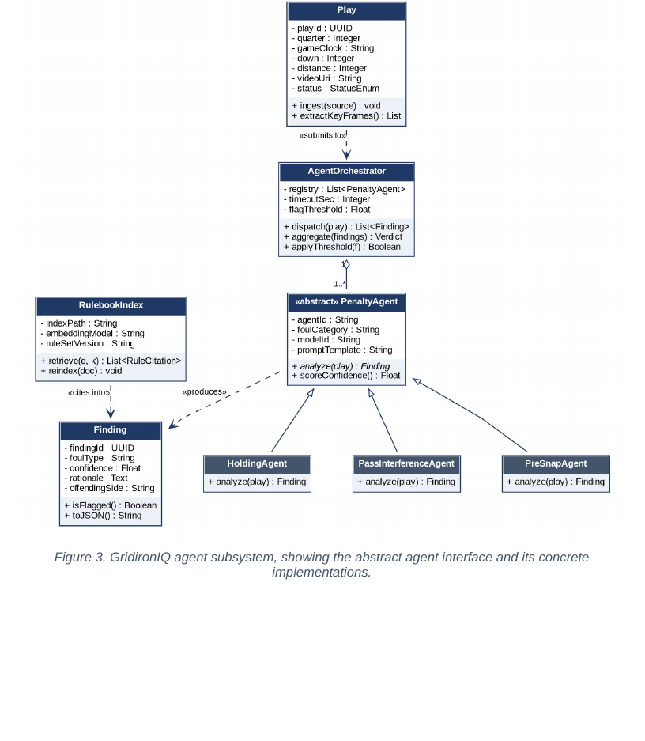

Student Innovation Project · SIP311
FlagAI powered by The Call AI
A plain-text play description goes in. A penalty ruling, the enforcement, and the exact rule citation come out — decided by code, explained by AI.
Innovation claim
FlagAI is the first officiating assistant that treats the NFL rulebook as executable code. A deterministic rule engine — not a language model — produces the penalty call, the yardage, and the rule citation, so every ruling is repeatable and auditable. The AI layer only explains the call in plain English; it never makes it. The result is a consistent, explainable second opinion for officials, coaches, broadcasters, and fans, delivered in under a second from a one-sentence description of the play.
What exists today
Video-review tools that need cameras and human judgment, and chatbots that can quote rules but hallucinate rulings.
What FlagAI changes
The ruling is computed from codified rules; the same play always gets the same answer, with a citation you can check.
Why it matters
Officiating disputes are trust problems. Auditable logic — not opaque predictions — is how you earn trust in a call.
Project description
The problem
Penalty enforcement in football is a large, interdependent rule system: what the foul is, where it happened, the down and distance, and whether fouls offset all change the outcome. Officials get it right most of the time, but when they don't, no one — not fans, not broadcasters, not even coaches — can quickly verify why a call was made or what the correct enforcement should be.
The solution (SIP311 scope)
FlagAI's minimum viable product is a text-to-ruling engine. The user types a description of the play. A parser extracts the actors and actions. A rule engine, built from the NFL rulebook encoded as structured rules, determines the foul, the penalty yardage, the enforcement spot, and whether the down is replayed — and returns the specific rule, section, and article. A large language model then produces a plain-English explanation of that ruling for a general audience.
Who it's for
- Officials in training — practice enforcement scenarios with instant, cited feedback.
- Coaches & analysts — check enforcement outcomes when preparing challenges.
- Broadcasters & fans — understand a call in seconds, with the rule in hand.
Deliberately out of scope for SIP311
Video and computer-vision detection of fouls. Peers in my SIP311 pitch review recommended narrowing to the rule-engine core first; CV becomes the future-work layer once rulings are trustworthy.
Team
Solo project. Design, rule encoding, engineering, and testing by Joseph Hudson Jr.
Architecture
Figure 1 — FlagAI pipeline. The ruling is produced by deterministic logic; the language model is confined to an advisory, explanatory role.
Tech stack
- Python 3 / FastAPI — REST API exposing
POST /ruling - Rule engine — rulebook encoded as structured rule objects with unit tests per rule
- LLM layer — Claude API for explanation only, with the engine's output as grounding
- n8n — automation and orchestration for batch scenario runs
- Git / GitHub — version control, CI test runs
Design principles
- Determinism first. Same input, same ruling, every time.
- Citation or nothing. Every ruling carries rule, section, and article.
- LLM is a narrator, not a referee. It cannot alter the engine's output.
- Testable by rule. Each encoded rule has scenario tests derived from the rulebook's own examples.
Prototype / proof of concept
Status
| Milestone | Status |
|---|---|
| Problem definition, pitch deck & peer pitch review | Done |
| Software Requirements Specification (CSC318) | Done |
| Rule schema & first rule family encoded (holding, pass interference) | In progress |
| Parser: play text → structured play | In progress |
| API endpoint + LLM explanation | Planned |
| Scenario test suite (50+ plays) | Planned |
| Demo UI for Boards | SIP411 |
Example interaction
Input 2nd & 8 at the OFF 35. Defensive back grabs the receiver's jersey 7 yards downfield before the pass arrives. Pass falls incomplete. Ruling Foul: Defensive Pass Interference Enforcement: Spot foul → ball at OFF 42 Down: Automatic 1st down Citation: Rule 8, Section 5, Article 1–2 Explanation (LLM, advisory) Because the contact restricted the receiver's ability to catch a catchable pass before it arrived, it is pass interference, not holding…
Sample output format; see the interface mockup below for the target UI.
Visuals, blueprints & concept art






img/thecallai-logo.png
The Call AI ecosystem (vision)
FlagAI is the football division of a multi-sport officiating platform, each division named for its sport's core officiating mechanism:
Code & documents
GitHub — flagai
Rule engine, parser, API, and tests. (Public repo link — update when pushed.)
Software Requirements Specification
GridironIQ SRS v1.0 (CSC318, 16 pp.): 6 objectives, 11 functional + 6 non-functional requirements, use case model, UML domain and agent diagrams, glossary, traceability matrix.
SIP311 pitch deck
"FlagAI powered by The Call AI" — 11 slides: problem, innovation claim, scope, target market, prior art, MVP architecture, prototype. (PDF; the PPTX is in docs/)
Video — n8n automations
Walkthrough of the automation behind FlagAI (in production).
SIP Brief
Placeholder — SIP Brief (Week 4 assignment). The completed brief will be embedded here and available as a subpage.
Open SIP Brief subpage →Roadmap to SIP411 Boards
- SIP311 · Weeks 1–4 Pitch, website, SIP Brief, innovation claim locked.
- SIP311 · Weeks 5–10 Rule schema, first rule families, parser, scenario tests.
- SIP311 · Weeks 11–15 API + LLM explanation layer, demo video, executability review for SIP408.
- SIP408 Build-out: broader rule coverage, UI, user testing with officials/coaches.
- SIP411 · Boards Live demo, objectives evidence, and defense.